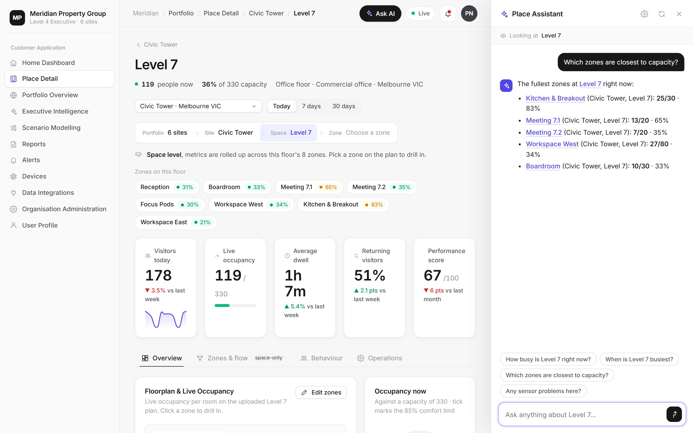

AI, predictions & planning
Don't just see what happened. Know what's next.
Place Performance learns the rhythm of every place to forecast demand, flag risks and recommend actions, then lets you test changes before you make them.

Ask your buildings anything
The Place Assistant answers questions in plain English using your live data, links straight to the places it mentions, and knows which screen you are looking at.

Forecasting
Predicted visitation and occupancy for the weeks ahead, per site, with confidence ranges that widen further out.

Scenario planning
Change opening hours, capacity, staffing or layout and see the projected impact on visits, peak occupancy, queues and cost per visit.

AI insights, every morning
Plain-language recommendations ranked by impact, each with the evidence behind it and a confidence score.
Use the data for planning
From operations to capital decisions.
Staffing & rosters
Match staff to forecast demand and peak periods.
Opening hours
Model the impact of earlier, later or extended trading.
Capital works
Forecast demand before committing to new space, then measure the result.
Investment analysis
Before-and-after views show whether a refit or intervention paid off.
Benchmarking
Compare sites with each other and with anonymised peer cohorts.
Board reporting
Executive packs summarise performance, forecasts and recommendations.
FAQ
Questions & answers
How does visitation forecasting work?
Forecasts are built from each place's own history, including time of day, day of week and seasonal patterns, to predict visitation and occupancy for the weeks ahead. Each forecast includes a confidence range that widens further into the future.
What can I ask the Place Assistant?
You can ask questions such as which rooms are over capacity, when a site is busiest, which sensors are offline, how this week compares with last, or what to focus on. Answers use your live data and link directly to the places they mention.
Which AI model powers the Place Assistant?
The Place Assistant uses Claude, a large language model from Anthropic, given a snapshot of the data your role is allowed to see at the time you ask. Contact us for details of data handling for your organisation.
What is scenario planning?
Scenario planning lets you change assumptions such as opening hours, capacity, staffing or layout and immediately see the projected effect on visits, peak occupancy, queue times and cost per visit, then save and compare scenarios side by side.
How are AI insights generated?
Each morning the platform analyses trends, peaks, capacity breaches and comparisons across your sites and writes plain-language recommendations ranked by impact, each with the supporting evidence and a confidence score.
Can it help justify capital investment?
Yes. Forecasts support the business case before you build, and investment analysis compares visitation, dwell and other outcomes before and after a project to show whether it paid off.
See your places in a new light.
Book a 30-minute walkthrough and we'll scope a pilot for one of your sites: sensors, installation, software and insights in one agreement.